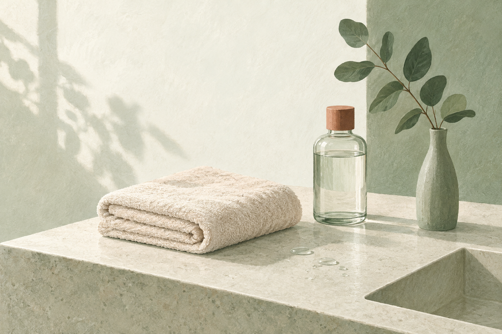
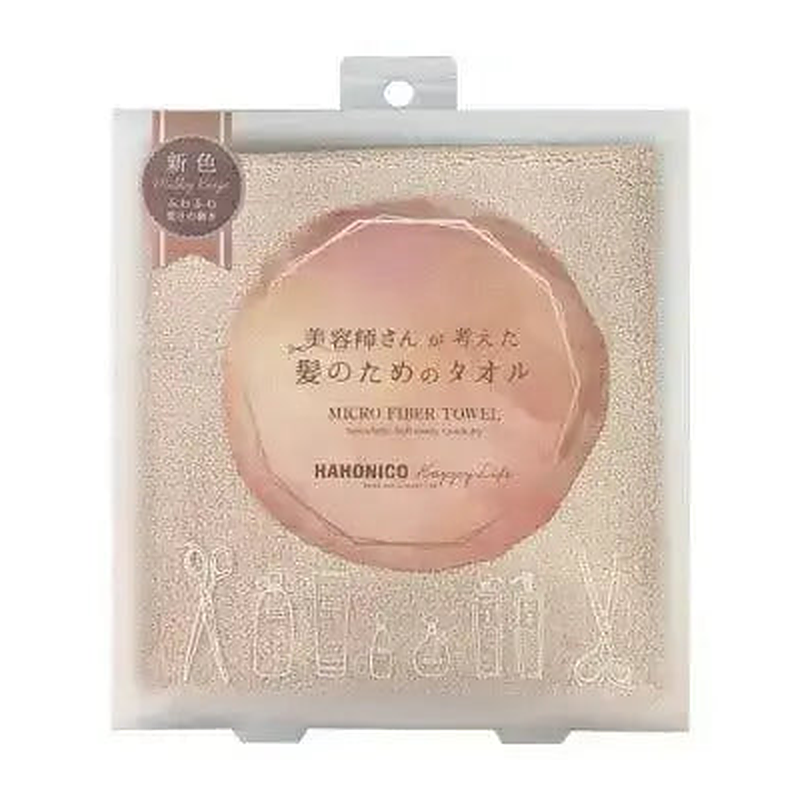

EMPATHY
こんな「タオルだけは、選んだ記憶がない」、心当たりありませんか。
- お風呂上がり、体を拭いたバスタオルでそのまま髪も拭いている
- 早く乾かしたくて、頭を掴んでガシガシ動かしている
- タオルを頭に巻いたまま、しばらく別のことをしている
- シャンプーもトリートメントも選び直したのに、タオルは選んだ記憶がない
- 洗面所のそのタオルが、いつからそこにあるのか思い出せない
- 髪は濡れているときがいちばん傷みやすい、と聞いたことはある
- ヘアケア＝髪に「何を使うか」の話だと、無意識に思っている
一つでも頷いたなら、あと3分だけ読み進めてほしいんです。
私はこのシリーズで、10回かけてアイテムを揃えてきました。合計¥52,286。前回はついにドライヤーまで見直して、洗う前から乾かすところまで、ひと通り揃った感覚がありました。
その前回の記事で、私は使い方の項目に一行だけこう書いています。「タオルドライをしっかりしてから使う(ここを丁寧にやるほど時間が減ります)」。
……書いておいて、そのタオルについては一度も考えたことがありませんでした。10回書いて、タオルに触れたのはこの一行だけです。
同じ記事で、私はこうも書いていました。「髪は濡れているときがいちばん無防備だとよく言われます」。だから熱を当てる時間を短くしたい、という話でした。
書いたあとで気づいたんです。そのいちばん無防備な状態のとき、私は何をしているだろう、と。──バスタオルで、ゴシゴシ拭いていました。

IF NOTHING CHANGES
正直に言うと、いちばん引っかかったのは「古いタオルを使っていること」じゃありません。
10回とも、「どう扱うか」を一度も見ていなかったことのほうです。
工程を順番に並べてみてください。洗う → 流す → トリートメント → 流す → タオルで拭く → 洗い流さないトリートメントを塗る → ドライヤーで乾かす。
前回扱ったドライヤーは、この並びの後ろのほうです。その手前に、タオルがあります。濡れた髪にいちばん最初に触れているのは、ドライヤーではなくタオルのほうでした。
しかも私が使っていたのは、体を拭くためのバスタオルです。体を拭く前提で作られた厚みと大きさのものを、髪に流用していただけでした。悪気はまったくなくて、そこに置いてあったからです。
そして、この状態はとても気づきにくい。タオルには、検討のタイミングが一生来ないからです。シャンプーは切らせば選び直す機会が来る。トリートメントも詰め替えのたびに一瞬考える。前回のドライヤーですら、壊れれば買い替えのタイミングが来ます。でもタオルは、多少くたびれても「まだ使える」で通ってしまう。
半年後も、たぶん同じです。洗面台には12本目、13本目の新しいアイテムが増えていて、でも濡れた髪をいちばん最初に触っているのは、いつからそこにあるのか分からないあのバスタオルのまま。
いちばんもったいないのは、ここです。第1〜10弾で、"何を使うか"の答えはもう出そろっているんです。出ていないのは、その手前で、どう扱っているかのほうだけ。
──ただ、先に言っておきます。この回は¥894です。急かす気はまったくありませんし、そもそもこの回でいちばん大事なのは、たぶん商品のほうではありません。それは後半で書きます。
THE TURN
そこでたどり着いたのが、「ハホニコ ヘアドライマイクロファイバータオル」でした。
ここで一つ、はっきりさせておきたいことがあります。第1〜10弾で紹介してきたものは、10本中8本が「髪につけるもの」、1本が手で動かすブラシ、1台が熱を出すドライヤーでした。
これは欠点ではありません。ケアの中心は、足りないものを足すことだからです。10本とも、その役割を果たしてくれました。
一方で今回のものは、そもそも種類が違います。塗るものでも、手で動かす道具でも、電源を入れる機械でもなく、ただの布です。シリーズで初めての、繊維でできたものになります。
言ってしまえば、第1〜10弾が"何を髪に使うか"。そしてこの1枚が"それをどう扱っているか"。使うものは10回で決まりました。11回目は、扱い方のほうです。
私がこの1枚を選んだ理由は、大きく3つ。
順番として、前回のドライヤーよりさらに手前にある
第8弾で「洗う前」に戻ったのと同じ構造です。今回は「乾かす前」に戻ります。濡れた髪に最初に触れるものを変えないまま、そのあとの工程だけ整えていたことになります。
この回の半分は、買わなくても実行できる
擦らない、挟んで押さえる。これは¥894を払わなくても今日からできます。11回書いてきて、初めて「商品を買わない部分」を主役に置ける回になりました。
¥894。合わなかったときに失うものがいちばん小さい
シリーズ最安です。従来の最安は第7弾のブラシ¥2,200でしたが、その4割。前回が¥9,350だったので、金額の落差は自分でも笑ってしまいました。
「何を使うか」から、「どう扱うか」へ。10回かけて使うものを揃えてきたからこそ、その手前にあった数分に目が向きました。
※本商品の吸水性・速乾性・摩擦負担の軽減に関する記載はメーカーの公表内容に基づくものであり、効果を保証するものではありません。感じ方には個人差があります。
THE PRODUCT
ハホニコ ヘアドライマイクロファイバータオルとは
ハホニコは、サロン向けのヘアケア用品を手がけているメーカーです。第1〜10弾で登場したオラプレックス、ケラスターゼ、リンク、LOA、資生堂プロフェッショナル、SINN PURETE、ルベル、クレイツとは重なりません。シリーズ初登場です。
そして商品の種類も、シリーズ初です。第1〜10弾は、化粧品が8本、ブラシが1本、家電が1台。今回は布です。カテゴリそのものが変わる、シリーズ唯一の1枚になります。

- タイプ
- ヘアドライタオル(シリーズ初の繊維製品)
- 価格
- ¥894(税込)/ シリーズ最安。従来最安の第7弾¥2,200の約4割
- 位置づけ
- メーカーによる説明は「美容師さんが考えた"髪のためのタオル"」
- 素材の特徴
- 一般的なマイクロファイバーよりも毛足の長い超極細繊維。やさしく抑え拭きするだけで吸水するとされています
- 織り
- 一般的なタオルとは異なるカットパイル仕上げ。ふんわりなめらかな肌触りとされています
- 摩擦について
- 濡れた髪をやさしく包み込み、摩擦で生じるキューティクルの剥離や角質への負担を軽減する、とメーカーは説明しています
- 速乾性
- 繊維が水分を吸収したあと、繊維同士のスキマが空気を取り込み水分を拡散するため、湿気がこもりにくいとされています
- サイズ感
- フェイスタオルよりは長く、バスタオルよりは短い、髪のケアに向いたコンパクトサイズ。ショートからロングまで対応
- 実績
- シリーズ累計販売数300万枚(2014年11月〜2024年8月末のメーカー出荷数)
- カラー
- 今回紹介しているのはミルキーベージュ
- ブランド
- ハホニコ・シリーズ初登場
この1枚のいちばんの特徴は、今のケアを1つも置き換えないという点です。シャンプーもトリートメントもオイルもバームもエッセンスもブラシもドライヤーも、今のまま。第1〜10弾で作った流れには、何も手を加えません。変わるのは、その流れの手前で髪に最初に触れるものだけです。
そして正直に書いておくと、私がこれを選んだ決め手は「吸水力がすごいから」ではありませんでした。そこは各社が言っていることで、比べるのが難しい。
決め手になったのは、もっと単純な部分です。吸ってくれる道具に替えると、擦る必要がなくなる。バスタオルで押さえてもなかなか水が減らないから、結局ゴシゴシしたくなるんです。正しい拭き方を意志で続けるより、そうしたくならない道具に替えるほうが早い、と思いました。
※上記の素材・構造・実績に関する記載はすべてメーカーの公表内容に基づくものです。効果を保証するものではなく、感じ方には個人差があります。
WHY IT WORKS
「で、結局894円の布で何が変わるの?」に、飾らず正直に答えます。
10回かけて「何を使うか」を揃えてきたからこそ、11回目でようやく「どう扱っているか」に目が向きました。これは、10本ぶん遠回りしたからこそ出てきた、私のいちばん正直な実感です。
※上記は素材・構造・使い勝手に関する説明です。効果には個人差があり、特定の結果を保証するものではありません。
WHY TRUST IT
正直に言うと、私は「吸水力がすごい」だけでは商品を信じないタイプです。
それでもこの1枚を紹介したいと思えたのは、こんな背景があるからです。
効果ではなく、順番で説明できる
吸水力や速乾性の数値は、正直なところ横並びで比べようがありません。だから私は、そこを主な判断材料にしていません。私が納得したのは「濡れた髪に最初に触れているのはタオルだ」という、確かめようのある順番のほうです。
買わなくてもできることを、先に書ける商品である
この回の半分は「擦らない、押さえる」という拭き方の話で、これは¥894を払わなくても実行できます。商品を買わなくても得るものがある回を作れたのは、11回目にして初めてでした。
累計300万枚という、期間つきの数字が出ている
2014年11月〜2024年8月末のメーカー出荷数として公表されています。「大人気」ではなく期間と数字で言われているぶん、受け取りやすいと感じました。
前回のドライヤーと矛盾しない。むしろ前提になる
第10弾の記事で私は「タオルドライをしっかりやるほど乾かす時間が減る」と書きました。今回はその一行を実行するための話です。前回買った人の役に立ち、前回買わなかった人にも効きます。
¥894はシリーズ最安。それでも1回まるごと使って紹介する理由
第1弾¥3,740、第2弾¥4,180、第3弾¥4,290、第4弾¥7,260、第5弾¥8,800、第6弾¥5,776、第7弾¥2,200、第8弾¥3,740、第9弾¥2,950、第10弾¥9,350。合計¥52,286、平均¥5,229。今回はその合計の1.7%です。金額が小さいから軽い話、とは思いませんでした。工程の順番でいちばん最初にあるものなので。
サロン専売品を、公式通販でそのまま買える
ALBUM ONLINE STOREは正規販売店です。私は毎回ここを確認してから紹介しています。
WHAT PEOPLE NOTICE
こんな使用感(声の傾向)
布なので、成分では語れません。だからこそ、盛らずに、使ってみて分かったことをそのまま整理してみます。
拭き方が変わったこと
いちばん大きかったのはここでした。これまでは頭全体を掴んでガシガシ動かしていたのが、挟んで押さえるだけで済むようになりました。「丁寧にやろう」と決意したからではなく、押さえるだけで水が減るので擦る理由がなくなった、というほうが正確です。
ドライヤーを当て始めるときの状態
乾かし始めの水の残り方が変わりました。結果としてドライヤーの時間も短くなっています。ただ、どこまでがタオルの性能で、どこからが拭き方を変えた効果なのかは、正直なところ切り分けられていません。
サイズについて
バスタオルより小さいので、最初は「足りるかな」と思いました。実際には髪だけを扱うぶんには持て余さないほうが扱いやすかったです。ただ、髪がとても長い・量が多い方は、感じ方が違う可能性はあると思います。
洗濯について
毎日使うものなので、洗い替えがあると回しやすいです。マイクロファイバーは一般に柔軟剤を使うと吸水性が落ちると言われるので、私は使っていません。洗濯方法は商品の表示をご確認ください。
巻いたままにすることについて
私は以前、タオルを巻いたまましばらく他のことをしていました。今は巻きっぱなしにしないようにしています。巻いている間も髪は濡れたままですし、蒸れます。これは商品の話ではなく、単に習慣の話です。
期待しすぎないほうがいい部分
ここは正直に書きます。タオルを替えても、髪が生まれ変わることはありません。ダメージが治るわけでもない。あくまで「濡れているあいだの扱いが雑でなくなる」だけです。894円でできることの範囲は、その範囲だと思っています。
もちろん、髪の量も長さも人それぞれ。だからこそ、「自分がお風呂上がりの数分で何をしているか」で考えてみる価値がある道具だと思っています。
※上記は一般的な使用感の傾向および個人の感想であり、効果を保証するものではありません。
FAQ
よくある質問
普通のバスタオルではダメなんですか?
894円で、本当に何か変わりますか?
何枚あればいいですか?
洗濯はどうすればいいですか?
タオルを頭に巻いたままでもいいですか?
第10弾のドライヤーと、両方必要ですか?
第1〜10弾のケアと併用できますか?
使うと髪が傷まなくなるということですか?
ABOUT THE PRICE
価格の考え方
ハホニコ ヘアドライマイクロファイバータオルは ¥894(税込)。このシリーズで紹介してきた11個の中で、いちばん安い金額です。これまでの最安は第7弾のブラシ¥2,200だったので、その約4割まで下がりました。
前回が¥9,350で、シリーズ最高でした。その次がこれです。落差については、自分でも笑ってしまいました。
これまでの10本を並べてみます。¥3,740 / ¥4,180 / ¥4,290 / ¥7,260 / ¥8,800 / ¥5,776 / ¥2,200 / ¥3,740 / ¥2,950 / ¥9,350。合計¥52,286、1本あたりの平均は¥5,229。今回の¥894は、その合計の1.7%です。
そのうえで、前回とつなげた計算をひとつだけ置いておきます。前回のドライヤーは1200W。仮にタオルドライを丁寧にして、毎晩の乾かす時間が3分短くなったとすると、1年でおよそ21.9kWh。電気代を1kWhあたり31円で計算すると、年間で約¥680です。
つまりこのタオル代は、うまくいけば1年ちょっとで電気代のほうから返ってくる計算になります。もちろん短縮できる時間には個人差がありますし、これを目的に買うものでもありません。ただ、894円という金額の意味を考えるときの材料にはなると思っています。
そしてもう一度、比率の話をさせてください。私はこのシリーズで、10本・合計¥52,286を「何を使うか」に使ってきました。同じ期間、「どう扱うか」に使った金額は¥0です。──毎回この計算をして毎回笑っているのですが、私はどうやら、毎回どこか1箇所を完全に空白にしたまま買い物をしているらしいんです。
そして繰り返しますが、この回でいちばん大事なのは、たぶん商品ではありません。擦らずに押さえて拭く。それは今日、いま家にあるタオルで実行できます。まずそこからで十分です。
※価格・在庫は変動します。最新情報は必ず商品ページでご確認ください。電気代の試算は「乾かす時間が3分短縮できた場合」を仮定した概算であり、短縮できる時間・電力量・単価は使用状況によって変わります。
BEFORE YOU GO
安心して試すために
「タオルを替えるだけで、そんなに変わるの?」その気持ち、よく分かります。私も10回ぶん、そこを一度も疑いませんでした。ヘアケアといえば"何を使うか"の話で、"どう扱っているか"の話だとは考えたこともなかった。
だからこの回は、他の回といちばん違う言い方をしておきます。買わなくていいので、拭き方だけ先に変えてください。
擦らない。挟んで押さえる。毛先は握って吸わせる。巻きっぱなしにしない。これだけです。今日、いま家にあるタオルでできます。
そのうえで、押さえてもなかなか水が減らないな、結局擦ってしまうな、と感じたなら。そのときに初めて、吸う側の道具を替えることを考えてもらえればいいと思っています。順番としては、そちらのほうが自然です。
金額は¥894で、このシリーズでいちばん安い。合わなかったときに失うものも、いちばん小さい回です。ただ、安いから軽い話だとは思っていません。工程の順番でいちばん最初にあるものなので。
そして、いきなり11個すべてを揃える必要もまったくありません。第1〜10弾で紹介したケアを、まず自分のペースで試す。そのうえで「使うものはひと通り揃ったな」と思えたときに、その手前にある数分を思い出してもらえれば十分です。
何を使うかは10回で決まりました。11回目は、それをどう扱っているかです。
※洗濯方法は商品の表示をご確認ください。マイクロファイバーと柔軟剤に関する記載は一般的に言われている内容であり、製品ごとの指定が優先されます。
LAST WORD
「洗う前」「洗う」「毎日のトリートメント」「乾かす前」「仕上げ」「週数回」「香り」「頭皮」「道具」「乾かす」。10回かけて、使うものはもう出揃っています。
でも、それはぜんぶ「何を使うか」の話でした。
それを、どう扱っているかの話は、10回とも一度も出てきていません。
このまま12本目の新しいアイテムを探し続けて、「まだ何か足りないのかも」と思いながらまた半年過ごすのか。それとも、今日のお風呂上がりだけ、擦らずに押さえてみるのか。
後者にはお金がかかりません。今夜から試せます。
追伸
正直に言うと、この1枚も「魔法のタオル」ではありません。これはタオルであり、髪が治る・傷まなくなるといった効果を持つものではない。使った翌朝に別人の髪になるわけでもありません。感じ方には個人差があります。
それでも私がこれを紹介したいのは、「髪に何を使うか」ではなく「それをどう扱っているか」を、11回目にしてやっと言葉にできたからです。第7弾では「実行を疑う」、第8弾では「順番を疑う」、第9弾では「もうやっている工程の中身を疑う」、第10弾では「塗るもの以外も髪に触れている」と書きました。今回わかったのは、そのどれとも違う場所──いちばん無防備な数分間に、いちばん雑なことをしていた、ということでした。
11回に分けて紹介してきましたが、この11個を全部揃える必要はまったくありません。とくに今回は、買わないまま実行できる部分があります。市販品ジプシーだった頃の私は、うまくいかないたびに使うものを買い替えていました。同じ道具でも、扱い方で結果が変わるとは考えたことがなかった。
もし、アイテムはひと通り揃っているのに、「まだ何か足りない気がする」がずっと消えていないなら。足りない最後の1つは、12本目のボトルではなく、お風呂上がりのあの数分の手つきのほうかもしれません。今夜、擦らずに押さえてみてください。それが今回いちばんお伝えしたいことです。